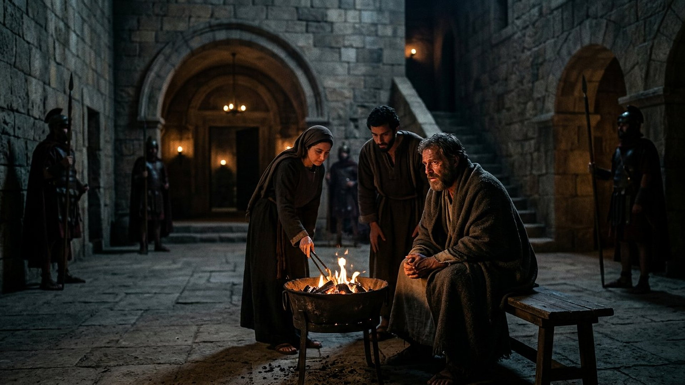
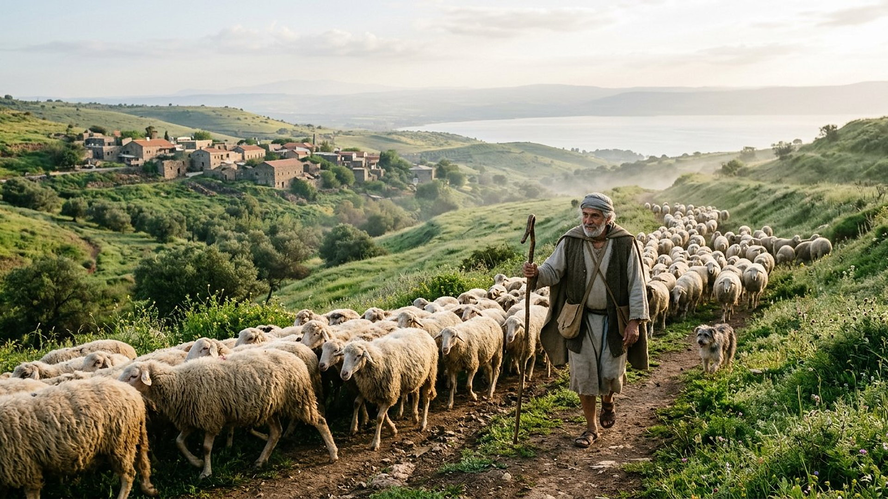

Salle 55 — Matthieu 26 ; Jean 21 ACCOMPLIE
Pierre : du reniement au relèvement
« Simon, Simon, voici que Satan vous a réclamés pour vous cribler comme le blé ; mais j'ai prié pour toi, afin que ta foi ne défaille pas ; et toi, quand tu seras revenu, affermis tes frères. » — Luc 22:31-32 (d'après Segond 1910, traduction sobre)
Reconstitution numérique — « Pierre s'assit au milieu d'eux », près du feu, dans la cour du souverain sacrificateur (Luc 22:55).
La promesse, la chute, le chant du coq
Le soir de la dernière Pâque, Simon Pierre (en grec, translittération : Símōn Pétros ; son surnom araméen est Céphas, translittération : Kēphâs, « rocher ») proteste de sa fidélité : « quand tu serais pour tous une occasion de chute, tu ne le seras jamais pour moi. » Jésus répond par une annonce précise et datée : « cette nuit même, avant que le coq chante, tu me renieras trois fois. » Quelques heures plus tard, pendant que Jésus est interrogé dans la maison du souverain sacrificateur, Pierre, assis près d'un feu de charbon dans la cour, nie par trois fois le connaître — devant une servante, puis un homme, puis un troisième qui reconnaît son accent galiléen. Le coq chante ; « le Seigneur, s'étant retourné, regarda Pierre » ; Pierre sort et « pleura amèrement » (Matthieu 26:33-35, 69-75 ; Luc 22:54-62, résumé sobre et citations d'après Segond 1910).
Dans la lecture retenue par ce musée, cette chute annoncée est le cas d'école intime de tout son parcours : Jésus avait tout dit — la dispersion, la prière intercédée pour Pierre, le retour et la mission d'affermir ses frères — sans rien de tout cela n'ait contraint la chute ni empêché le relèvement. Quelques semaines plus tard, au bord du lac de Tibériade, autour d'un autre feu de charbon où grille du poisson, trois questions répondront aux trois reniements : « Simon, fils de Jonas, m'aimes-tu ? — Pais mes brebis. » La salle raconte cette arc complet, de la cour nocturne à la rive de l'aube.
Le récit en cinq temps
De la protestation du soir au « suis-moi » du matin, avancez d'une station à l'autre.
Le banc des preuves : des lettres très tôt recopiées
DÉBATTU
Le Papyrus Bodmer (𝔓⁷²) : les lettres de Pierre copiées dès l'Antiquité tardive (EV-64)
Un codex de papyrus conservé entre Genève et la Bibliothèque vaticane (en latin : Bibliotheca Apostolica Vaticana), connu des spécialistes comme le Papyrus Bodmer (sigle 𝔓⁷² ; translittération du signe : papyrus 72), contient les plus anciennes copies complètes connues des deux lettres attribuées à Pierre, transcrites vers le IIIe ou le IVe siècle selon les datations discutées. Vérifié : ces lettres circulaient et étaient recopiées très tôt, au même titre que les évangiles. Débattu : leur rédaction par l'apôtre lui-même ou dans son cercle, question sur laquelle les spécialistes restent partagés — et, plus largement, l'histoire de la fin de Pierre à Rome, transmise par la tradition plutôt que par des pièces d'archives.
LECTURE PROPHÉTIQUE
Une chute et un retour annoncés dans la même phrase
L'annonce de Luc est double : Satan a réclamé les disciples « pour vous cribler comme le blé », mais la prière de Jésus pour Pierre et son retour sont déclarés avant la chute — « quand tu seras revenu, affermis tes frères ». Dans la lecture du musée, c'est la forme la plus précise de son fil rouge : la prescience nomme la défaillance, son heure et son chant du coq, tout en inscrivant le relèvement dans le même oracle. Ni la chute n'est un accident imprévu, ni le pardon une réparation de fortune.
DÉBATTU
Le chapitre 21 de Jean : épilogue ou conclusion d'origine ?
La scène du lac — pêche miraculeuse, repas de braises et triple « m'aimes-tu » — se lit après une phrase qui sonne comme une fin : « Jésus a fait encore beaucoup d'autres signes » (Jean 20:30-31). Les spécialistes débattent donc du statut du chapitre 21 : conclusion prévue dès l'origine ou épilogue ajouté, peut-être par le cercle johannique, pour raconter le relèvement de Pierre et corriger une rumeur sur le disciple bien-aimé. La salle présente ce débat de composition, qui ne change ni l'ancienneté du texte transmis ni la place de la scène dans le canon reçu.
Quatre clés pour bien lire les nuits de Pierre
1. Le zèle sans connaissance de soi
Pierre ne ment pas quand il proteste : il se surestime. Il tirera même l'épée au jardin (salle 54) avant de reculer devant une servante — le courage d'impulsion n'est pas le courage de durée. L'annonce « avant que le coq chante » visait précisément cet écart ; la chute le mesure, et les larmes montrent que le cœur n'avait pas suivi la bouche. Le récit ne ridiculise pas Pierre : il en fait le miroir des lecteurs pressés de promettre.
2. Deux feux de charbon, un seul mot grec
Jean emploie le même mot rare pour le feu de la cour du reniement (18:18) et pour le feu du petit déjeuner au bord du lac (21:9) — en grec, translittération : anthrakiá, un feu de charbons. Le relèvement rejoue donc la scène de la chute dans l'autre sens : même décor, même homme, mais cette fois trois confessions d'amour là où il y avait eu trois dénégations. La salle fait de ces deux braises ses première et dernière lumières.
3. Trois questions qui réparent sans humilier
« M'aimes-tu plus que ceux-ci ? » : Jésus ne demande ni excuses publiques ni récit de la nuit ; il demande trois fois l'amour, et confie à chaque réponse un troupeau — agneaux, brebis, brebis encore. La restitution est une mission, pas une probation. Pierre, attristé à la troisième question, répond en s'en remettant à la connaissance de Jésus : « Seigneur, tu sais toutes choses » — l'homme qui se connaissait trop se laisse désormais connaître.
4. Le relevé devient le berger de la Pentecôte
Cinquante jours après la cour, c'est Pierre qui se lève devant la foule de Jérusalem pour expliquer la Pentecôte (salle 45), Pierre qui ouvrira la porte aux nations chez Corneille (translittération : Kornḗlios) et Pierre dont les lettres diront aux anciens : « paissez le troupeau de Dieu » (1 Pierre 5:2, d'après Segond 1910). Dans la lecture du musée, l'homme du reniement devient la démonstration que la chute annoncée n'est pas le dernier mot d'une vie.
Prescience n'est pas fatalité — averti, tombé, relevé
Pierre a été averti avec une précision d'horloge — cette nuit, trois fois, avant le coq — et il est tombé quand même : l'avertissement n'était pas une contrainte, il est devenu, après coup, la preuve qu'il était connu et déjà pardonné d'avance. La prescience avait tout dit, y compris le retour : « quand tu seras revenu, affermis tes frères. »

Salle 54 : la nuit où Pierre dormit, puis tira l'épée · Salle 45 : Pierre relevé se lève devant la foule · Salle 39 : le matin qui rend le relèvement possible
Écouter la salle
Transcription de la narration
Bienvenue. Dans un instant, vous verrez une cour ancienne à la tombée de la nuit, puis un lac au lever du soleil avec une barque de pêche, et enfin un troupeau qui traverse des collines verdoyantes. Je vous souhaite une très bonne visite. La visite avance en cinq étapes courtes. Prenez le temps d'observer chaque image et de lire les panneaux : ils présentent une promesse, une chute et un relèvement, un très ancien recueil de lettres, et les questions des spécialistes. Merci de votre attention.